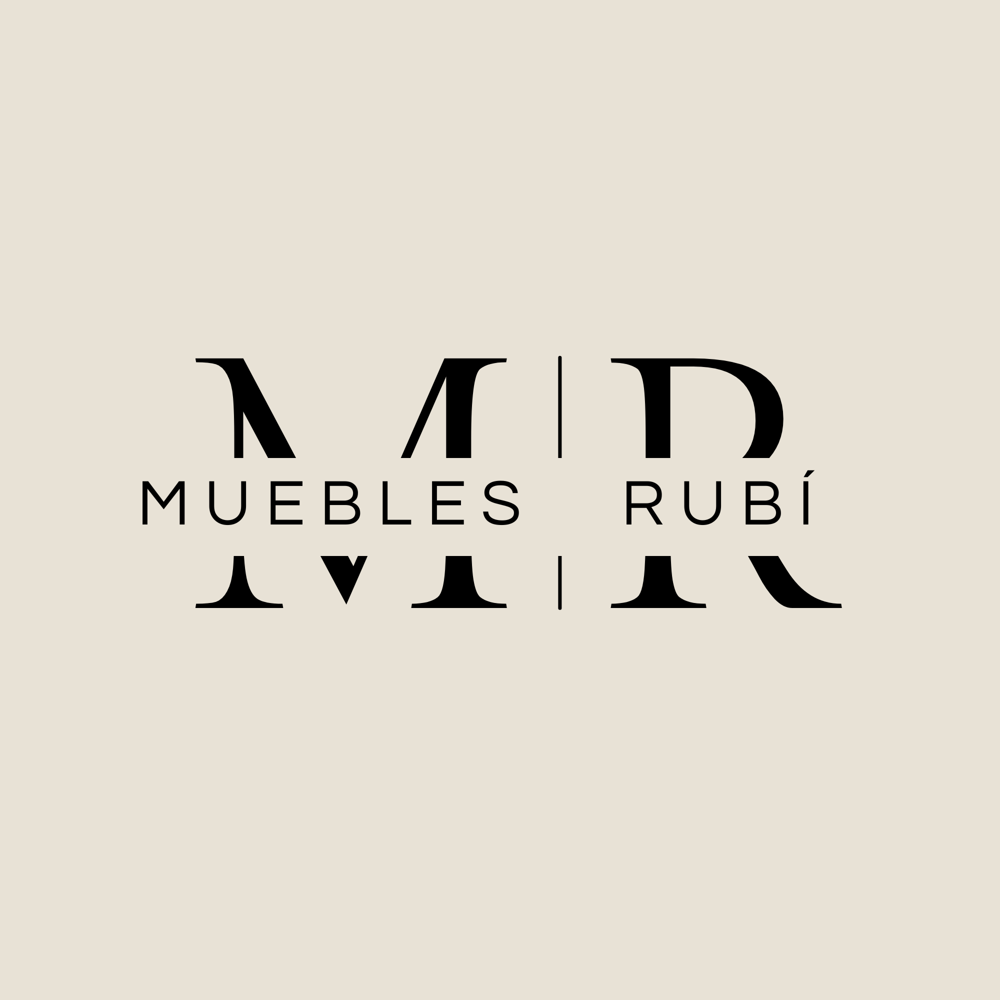
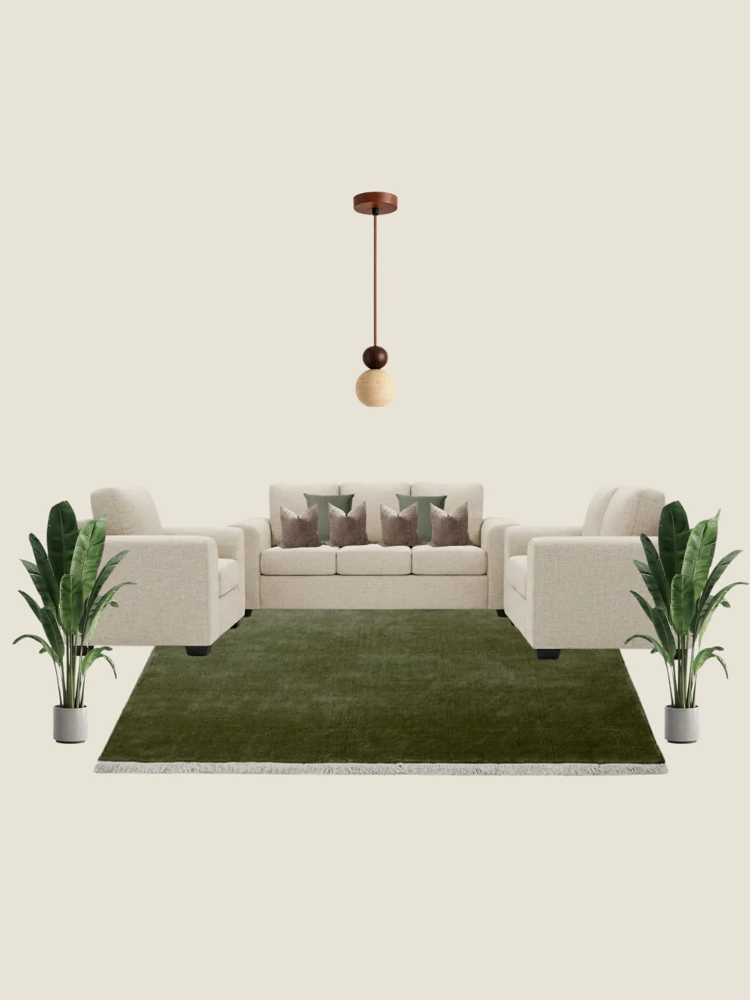
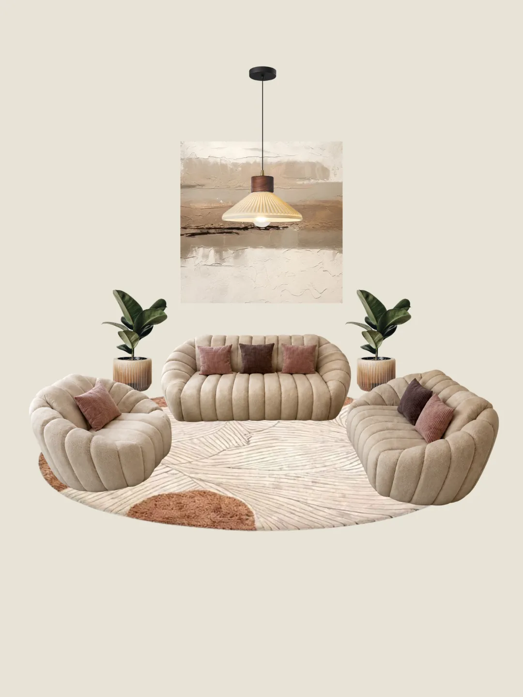
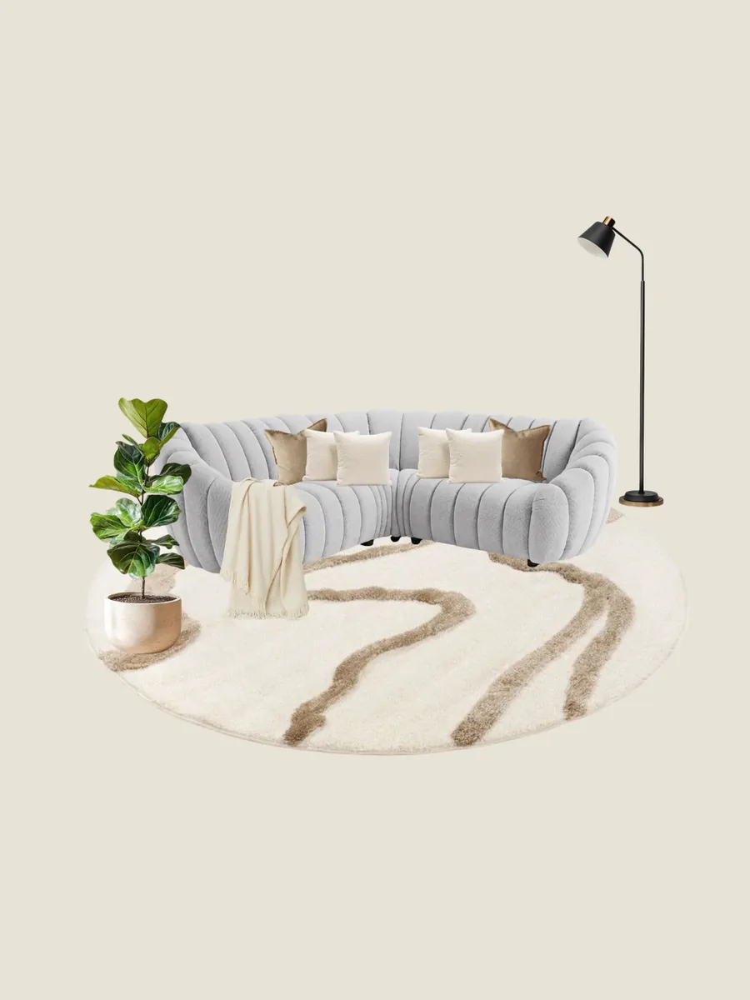
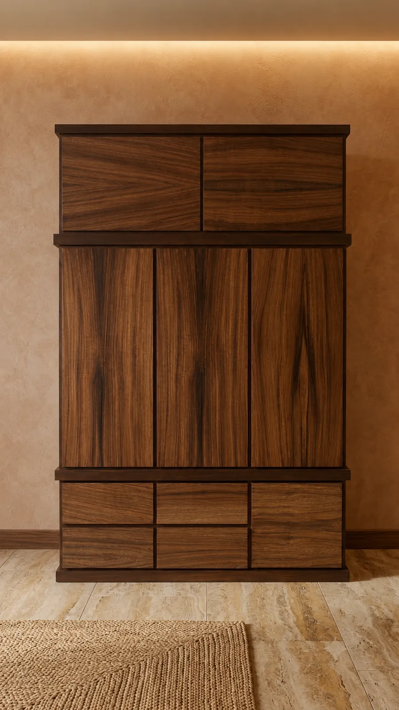

Nuestra historia
Desde hace más de 30 años fabricamos muebles que combinan diseño, comodidad y calidad artesanal. Cada pieza es elaborada por manos expertas en San Pedro Tultepec, Lerma, utilizando materiales seleccionados como madera de pino y chapa de parota para ofrecer muebles resistentes, elegantes y hechos para durar.
Además de nuestros muebles de madera, encontrarás salas de tela, sillones, reclinables, sofá camas y una línea de herrería con mesas, bancos y mobiliario para hogar o negocio.
Personaliza el modelo, las medidas y los acabados para crear un espacio que refleje tu estilo. Cada mueble refleja nuestro compromiso con la calidad, el diseño y la durabilidad.
Explora nuestro catálogo y encuentra la pieza perfecta para hacer de tu hogar un lugar único.
Catálogo
Piezas listas para llevar a tu hogar o como punto de partida para un diseño completamente personalizado.
¿No encuentras lo que buscas? Podemos crearlo especialmente para ti.
Diseña a tu medidaDiseño a medida
Cada proyecto comienza con tu idea y termina en una pieza única. Comparte tu boceto, una foto de referencia o solo una descripción por WhatsApp — nosotros nos encargamos del resto.
Compártenos tu boceto, referencia o idea por WhatsApp. Sin complicaciones, sin formularios.
En 24 horas te damos un presupuesto detallado con materiales, medidas y tiempo de fabricación.
Nuestros carpinteros construyen tu pieza a mano con madera seleccionada en nuestro taller.
Tu mueble está listo entre 7 y 15 días hábiles, para recoger en tienda o coordinar su traslado a tu hogar.
Pino y chapa de parota: la base de muebles que perduran.
Trabajamos con maderas nobles que mejoran con el tiempo. La chapa de parota, con sus vetas únicas e irrepetibles, viste cada comedor y cada mesa con un carácter que no se repite.
El pino macizo, tratado y lacado en nuestro taller, ofrece la calidez perfecta para recámaras y espacios de estar. Ninguna pieza es idéntica — eso es su valor.
Inicia tu proyecto


Síguenos
@mueblesrubimx — inspiración, muebles terminados y el proceso detrás de cada pieza.
Hablemos
Escríbenos por WhatsApp o déjanos tus datos y nosotros te contactamos.
Formulario de contacto
Nuestros locales en San Pedro
C. Benito Juárez 73, 52030 San Pedro Tultepec, Lerma, Estado de México
C. Benito Juárez Manzana 033, 52030 San Pedro Tultepec, Lerma, Estado de México